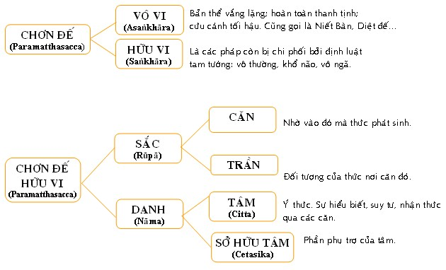

|
PHẬT GIÁO NGUYÊN THỦY THERAVÀDA VI DIỆU PHÁP BAN HOẰNG PHÁP |
|
BuddhaSasana Home Page |
Vietnamese, with Unicode VU Times or CN-Times font |
|
|
PHẬT GIÁO NGUYÊN THỦY THERAVÀDA VI DIỆU PHÁP BAN HOẰNG PHÁP |
|
Xin lưu ý: Cần có phông UnicodeViệt-Phạn VU Times hay CN-Times cài vào máy để đọc các chữ Pàli. |
|
BÀI 3.
PHÁP CHƠN ÐẾ Chơn đế là sự thật bản thể của Tục đế, một sự thật cố nhiên và không bao giờ thay đổi. Khi ta gọi anh A, theo Tục đế thì anh A là một người có một sắc tướng riêng biệt, một sự thật giã định để phân biệt giữa người này với người khác; theo Chơn đế thì anh A là một tập hợp của ngũ uẩn và ngũ uẩn đó mới chính thật là anh A. Thật ra rất khó mà định nghĩa một cách trọn vẹn và đầy đủ từ ngữ Paramatthasacca, vì nó bao hàm rất nhiều nghĩa mà mỗi nghĩa là một khía cạnh của pháp Chơn đế: Không bao giờ thay đổi (Parama aviparito): không thay đổi ở đây không có nghĩa là thường hằng, bất biến, mà nó có nghĩa là trước sau giống nhau không sai khác. Quá khứ như thế nào thì hiện tại và tương lai cũng như thế ấy; do đó được gọi là chơn như (chơn: sự thật; như: không thay đổi). Ðối tượng của trí tuệ cao siêu (Paramattha): nghĩa lý cao siêu, chân lý vi diệu, bản thể của vạn pháp; do đó cũng được dịch là siêu lý. Ðệ nhất nghĩa đế (Paramatthasacca): sự thật tuyệt đối, vô song. Ngoài ra, về mặt chiết tự ta có thể hiểu (chơn: sự thật, đế: sự thật) chơn đế là sự thật của sự thật, là thực thể của tục đế. Theo Vi Diệu Pháp có tất cả là bốn thực thể của các pháp: 1. Tâm (Citta): thành phần tri giác của chúng sanh. 2. Sở hữu tâm (Cetasika): thành phần phụ thuộc của tâm. 3. Sắc pháp (Rūpa): thành phần vật chất, vô tri. 4. Niết bàn (Nibāna): bản thể tịch tịch, chấm dứt sự sinh diệt của Danh Sắc. Tâm và Sở hữu tâm là bản thể vô hình, được gọi là Danh (Nāma); đối lại với Sắc pháp (Rūpa) gọi là Sắc. Danh và Sắc thuộc về thành phần do duyên tạo nên được gọi là pháp hữu vi (Saṅkhāra). Trái lại Niết Bàn là sự tịch tịnh, diệt hoàn toàn, không phải là pháp bị tạo nên được gọi là pháp vô vi (Asaṅkhāra).  Người học Phật cần phải phân biệt rõ thế nào là giả định, thế nào là thật thể. Ðâu là hữu vi, đâu là vô vi để không có sự lầm lẩn, chấp "ngón tay là mặt trăng"; nhất là đối với người hành thiền quán thì vấn đề càng quan trọng hơn, vì hành thiền minh sát là quán xét để thấu triệt bản chất thật thể của các pháp. Một điểm cần ghi nhận là điều tinh túy của Abhidhamma là sự sâu sắc về bản thể pháp hay pháp chơn đế. Một nhà chú giải đã viết "Abhidhamma sabhāvo gambhiro = Vi Diệu Pháp sâu xa về bản thể pháp". Vì vậy, người học Vi Diệu Pháp cần nắm vửng nghĩa lý của pháp chơn đế. -ooOoo-
Ðầu trang |
Mục lục
| 01
| 02
| 03
| 04
| 05
| 06
| 07
| 08
| 09 |
Chân thành cám ơn Bác sĩ Nguyễn Tối Thiện đã gửi tặng bản vi tính (Bình Anson, 10-2002).
[Trở
về trang Thư Mục]
updated: 24-08-2003